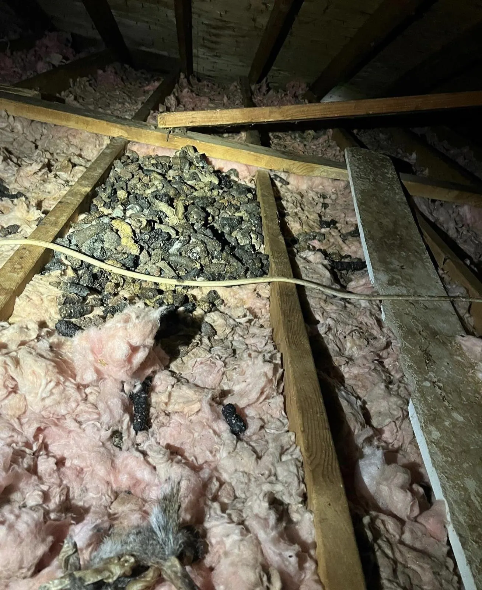

Raccoons in Attic.
Remove. Clean. Seal.
Raccoons are heavy, destructive attic invaders — torn vents, damaged insulation, contaminated spaces. We remove, restore, and seal the building so they stay out.
Signs of raccoons in the attic
Raccoons are the heavyweight attic problem in the Finger Lakes. The signs are physical — noise with weight behind it, and damage at the entry.
- Heavy thumping or walking in the attic, especially at night
- Torn roof vents, soffits, or fascia; entry holes forced or chewed at the roofline
- Insulation flattened, torn, or tunnelled across wide areas
- Droppings concentrated in one spot — a latrine — with a strong, persistent odor
- Scratches, prints, or smudge marks at the entry point
Tell us what you are hearing and where the damage is. The inspection confirms the animal and finds the entry.

How raccoons use a house
A raccoon reads an attic as a hollow tree: elevated, dry, and defensible. Females den in attics in spring to raise young, and a denning female is committed to the site — she chose it, and she will defend the choice by returning if she is simply chased off. Raccoons are strong, with dexterous front paws. Vents, soffit panels, and loose fascia that resist smaller animals are opened by raccoons without difficulty.
Inside, the damage accumulates quietly. Insulation is flattened and torn where they travel and nest. Droppings build up in a latrine — one repeated spot, usually on insulation. The longer a den is occupied, the more of the attic is affected, which is why raccoon work has a restoration step that other animals often do not need.
How raccoons get in
Raccoons climb — downspouts, tree limbs, trellises, and the corners of buildings are all routes to the roof. From the roof they test the weak points: roof vents with light covers, soffit panels, loose fascia, and the junctions where roof sections meet. A raccoon does not need a large opening to start with; it needs an edge it can grip, and it enlarges the opening from there. Chimneys without sound covers are also used — a chimney flue reads to a raccoon as a hollow trunk. The inspection therefore covers the whole roofline and the routes to it, not only the hole the animal is currently using. Sealing the used entry while leaving the tested ones open simply moves the problem along the eaves.
What we do
- Removal and entry identification — the animals removed, every entry found and mapped
- Sealing — vents, soffits, fascia, and roofline gaps closed with durable, animal-proof materials
- Cleanout and disinfection options — the latrine and affected material dealt with after the animals are out
- Insulation options — removal and installation where the damage requires it
- Monitoring — a follow-up check that the entries stay shut
Damage and contamination
Raccoon damage is structural as well as sanitary. At the entry, vents are torn out, soffit panels are pulled down, and shingles and flashing are lifted by an animal strong enough to pry. Inside, insulation is compressed where they travel — compressed insulation insulates less — and torn where they nest. The latrine is the lasting problem: droppings and urine concentrated in one area, soaking into insulation that then holds the odor after the animals are gone. A raccoon that has denned for a season has also mapped the building. It knows the weak vents and the loose panels, and it will test them again — which is why raccoon sealing is specified for strength, and why the follow-up check matters.
What we seal
Roof vents, soffits, fascia, chimney and vent penetrations, and roofline gaps — sealed with durable, animal-proof materials and documented in writing. Raccoon sealing is specified for strength: the material and the fixing have to resist an animal that pulls.
After removal: cleanout and restoration
Removal ends the occupation; it does not undo it. The latrine, the torn insulation, and the odor remain until they are dealt with. Restoration follows the sequence — animals out, entries sealed, then the attic cleaned and rebuilt. The scope is set by what the inspection finds: a short occupation may need only the latrine area dealt with, while an established den can mean insulation removal across the space. Either way, the options are set out in writing before the work is agreed, and the attic is not restored while there is any route back in. See Attic Restoration → for how that work runs.
What you get in writing
The entries found, what was removed, what was sealed and with what, the condition of the attic as found, and the restoration options where they apply. The file is the record of the job — what was done, where, and with what materials.
Prevention
Food and waste stored so they do not feed harborage — the same discipline as any wildlife prevention. Roof vents and soffits kept intact and in repair deny the starting point raccoons pry at. Overhanging limbs cut back remove one route to the roof, though raccoons also climb. If heavy noise starts at night, act on it early: a new den is a smaller job than an established one.